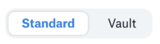

Configure the Data Source Connection¶
Alation Cloud Service Applies to Alation Cloud Service instances of Alation
Customer Managed Applies to customer-managed instances of Alation
You configure the connection to the data source on the General Settings tab of the settings.
Note
If your organization has configured Azure KeyVault or AWS Secrets Manager to hold to hold the credentials and connection information, the user interface for the General Settings page will change to include the following icons to the right of most options:
Version 2.2.0 or newer
Versions before 2.2.0

By default, the standard mode is selected.
In the vault case, instead of the actual credential information, you enter the ID of the secret. See Configure Secrets for OCF Connector Settings for details.
Depending on your connector version, use the information in the relevant topic:
Version 2.2.0 or Newer¶
Use the information in this section to configure the General Settings tab for the Databricks Unity Catalog OCF connector version 2.2.0 or newer. In version 2.2.0, the user interface of the General Settings page was redesigned. The new interface will be available if your Alation version is 2023.3.4 or newer.
Note
If you have installed connector version 2.2.0 or newer on an Alation version older than 2023.3.4, refer to Versions Before 2.2.0. The user interface of the General Settings tab for connector version 2.2.0 or newer on Alation versions older than 2023.3.4 will be the same as in versions before 2.2.0.
Follow these steps to configure and test the data source connection on the General Settings tab:
Provide the JDBC URI¶
Under section Step 1: Provide the JDBC URI of the General Settings tab, enter the JDBC URI in the required format and save your input. Find the information on the JDBC URI formats in Build the JDBC URI.
Configure Authentication¶
Under section Step 2: Configure authentication, provide the authentication information and save your input:
If you are authenticating with the username and password, provide them in the Username and Password or Personal Access Token field.
If you are authenticating with a personal access token (PAT), then type the word
tokenin the Username field and enter your PAT in the Password or Personal Access Token field.
Test the Connection¶
Under section Step 3: Test connection, test the connection by clicking Test. Alation will try to reach Databricks using your JDBC URI and authentication information. The test status will be displayed in the user interface.
In case the test ends in errors or partial success, Alation will display an error log. Review the error messages in the log for troubleshooting suggestions.
Note
On Alation Cloud Service instances only, the connection test may fail with the following error if Alation hits the connection timeout (one minute): Request failed with status code 504.
For example, if Alation’s user has the
Can Restartpermission but the cluster is down, the test connection can fail as the cluster start takes more than one minute. Reattempt the test after the cluster has started.
Configure Advanced Settings¶
You can optionally configure more settings for your data source. You can find the additional settings in the Advanced settings (optional) section of the General Settings tab:
Configure Additional Data Source Connections¶
Populate the Additional data source connections field if you have BI sources in the catalog that use data from the current data source. This enables Alation to link the data source to the relevant BI sources through lineage. Enter the connection information in the <host>:<port> format. If you are entering multiple values, separate them with commas.
Note
For more guidance on how to use this field, refer to BI Connection Info. (For some connectors or connector versions, the Additional data source connections field may be named BI Connections Info. It is the same field.)
Configure Obfuscation of Literals¶
This setting is not applicable to Databricks Unity Catalog data sources.
Configure Logging Level¶
In the Connector logs (optional) section, from the Log Level dropdown list, select a level and save your choice. The available log levels are based on the Log4j logging framework.
You can view the connector logs in Admin Settings > Server Admin > Manage Connectors > Databricks Unity Catalog OCF Connector.
Versions Before 2.2.0¶
Use the information in this section to configure the General Settings tab for connector versions before 2.2.0. Enter the required information in each section of the General Settings user interface:
Application Settings¶
Specify Application Settings if applicable. Click Save to save the changes after providing the information.
Parameter
Description
Additional data source connections
This parameter is used to generate lineage between the current data source and another source in the catalog, for example a BI source that retrieves data from the underlying database. The parameter accepts host and port information of the corresponding BI data source connection.
Use the following format:
host:portYou can provide multiple values as a comma-separated list:
10.13.71.216:1541,sever.com:1542Find more details in BI Connection Info.
Disable Automatic Lineage Generation
(Present in the user interface in connector versions before 2.0.3.6564)
This checkbox enables or disables automatic lineage generation from QLI, MDE, and Compose queries.
If you are using connector version 2.0.2.6259, you must disable auto-lineage generation before running QLI by selecting this checkbox.
On connector version 2.0.3.6564 or newer, you don’t have to manually disable automatic lineage as it’s disabled programmatically.
Connector Settings¶
Populate the data source connection information and save the values by clicking Save in this section.
Data Source Connection¶
Parameter
Description
JDBC URI
Specify the JDBC URI in the required format.
Username
For token-based authentication, use the value
token.Password
Paste the personal access token for Alation’s user you created in Databricks to use as a service account.
Logging Configuration¶
Select the logging level for the connector logs and save the values by clicking Save in this section. The available log levels are based on the Log4j framework.
Parameter |
Description |
|---|---|
Log level |
Select the log level to generate logs. The available options are INFO, DEBUG, WARN, TRACE, ERROR, FATAL, ALL. |
Obfuscate Literals¶
Skip this section as it’s not applicable to Databricks Unity Catalog data sources.
Test Connection¶
Under Test Connection, click Test to validate network connectivity.
If the connection test fails, make sure the JDBC URI and Alation’s user credentials are correct.